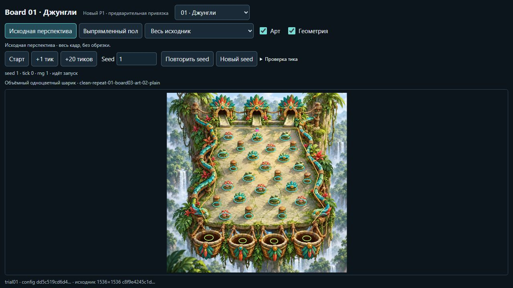
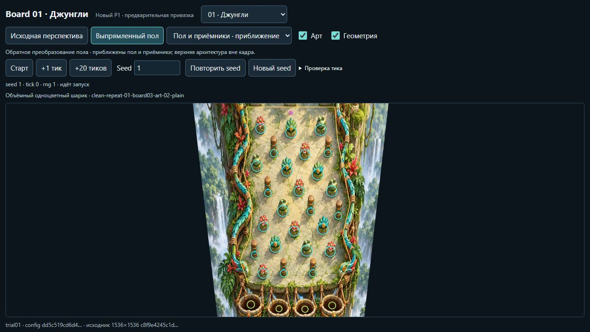
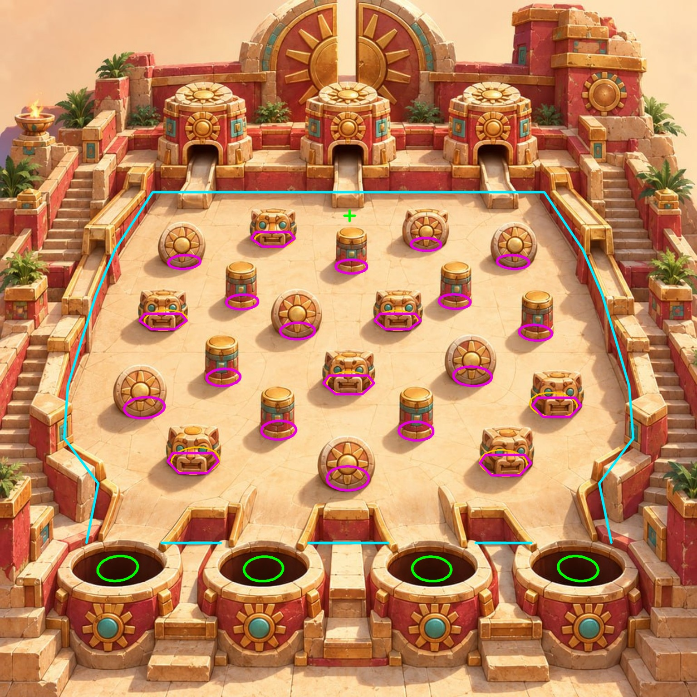
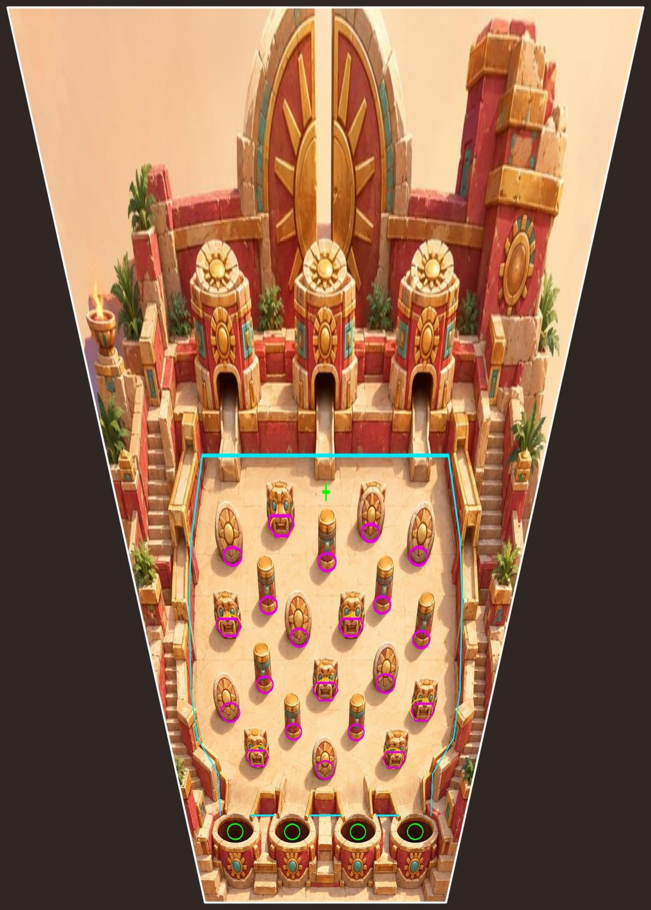
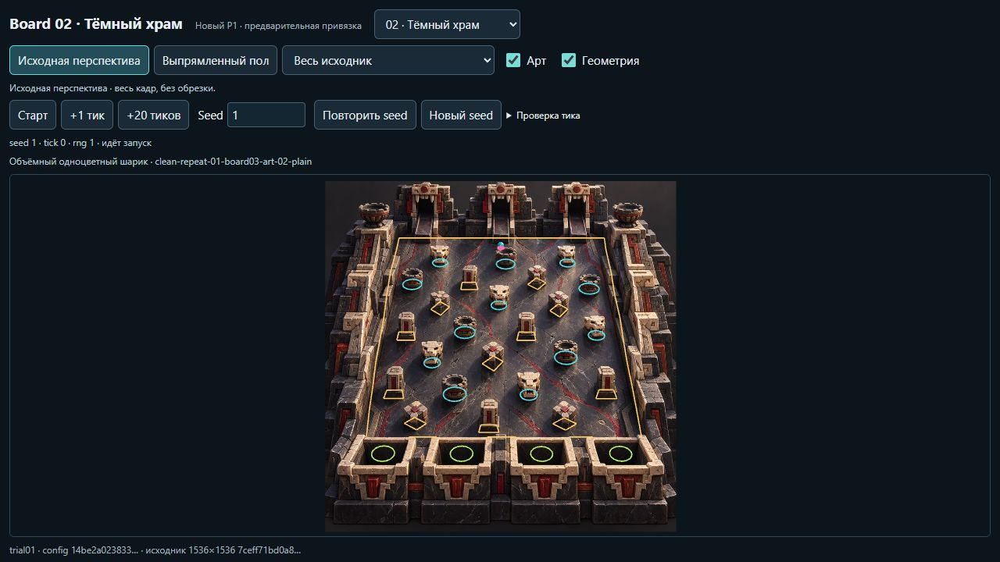
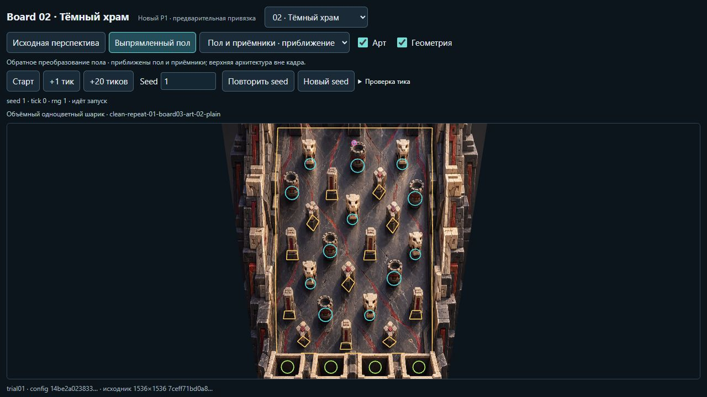
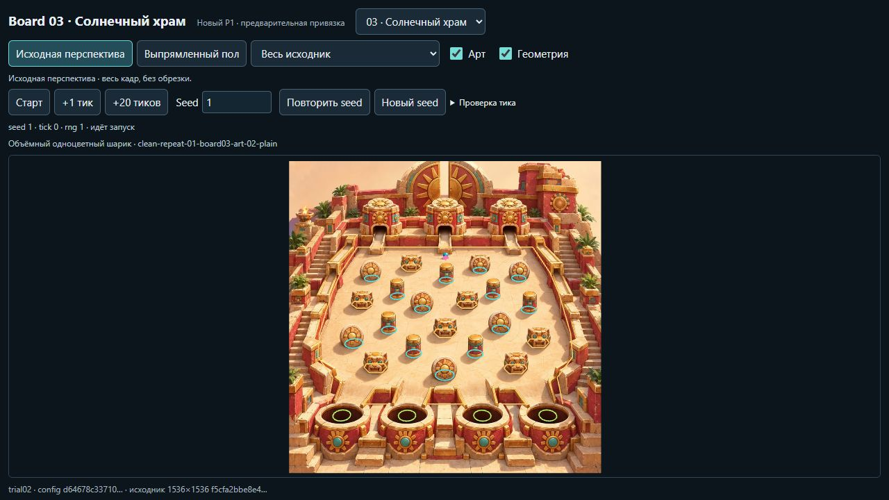
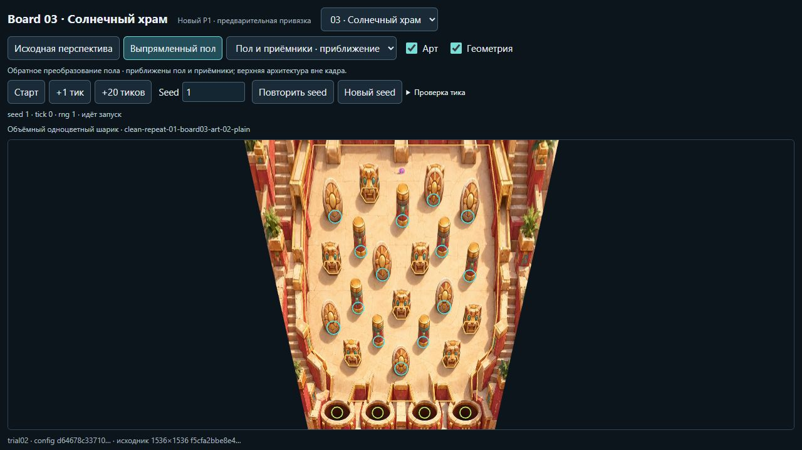
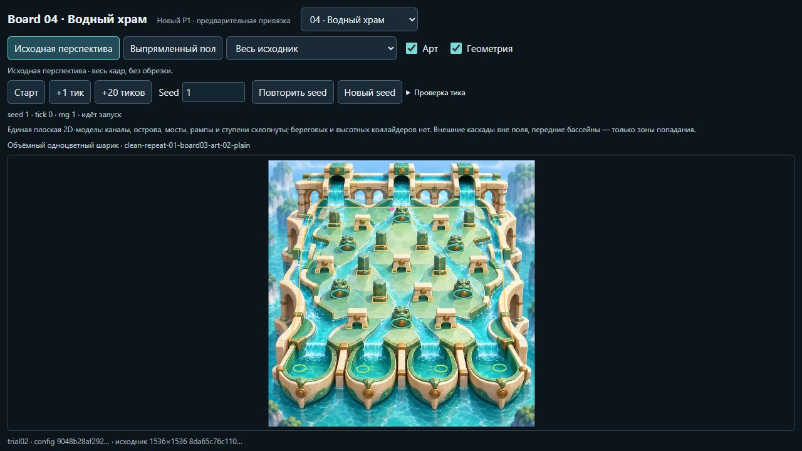
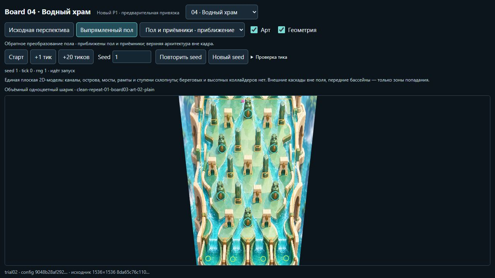

01 Джунгли
Цветы, листья, лягушки и деревянные столбики представлены условными круглыми нижними опорами. Извилистый край платформы сохранён ломаной. Висящие корзины ниже пола сведены к отдельной условной области приёмников.




Статический отчёт · принят 27 октября 2026
Для четырёх рисунков подготовлены привязка препятствий к полу и обратимое преобразование перспективы. На этой странице — фактический рецепт принятого P1, сохранённые изображения и границы результата.
Маппинг и воспроизводимая перспектива с визуальным подтверждением, прежде всего расположение препятствий. Демонстрация движения, шарик и тень не были условиями приёмки P1. Наличие старта и зон попадания в данных само по себе не означает отдельной приёмки их физического качества.
На каждом рисунке вручную отмечены швы и края пола, повторяющиеся основания, передние точки контакта и видимые части опор. Камера оценена отдельно для каждой доски: по сходящимся швам либо изменению ширины повторяющихся объектов; сжатие пола — по горизонтальным верхним граням и эллипсам. Силуэт всей архитектуры не подменяет прямоугольник пола.
Прямая матрица переводит плоские координаты в пиксели исходника, обратная — пиксели в плоскость. После умножения однородных координат обе координаты делятся на w. Основания приближены кругами или замкнутыми наборами сегментов; скрытые задние части остаются оценками.
В native-координаты конфигурации добавлен один общий сдвиг: без масштаба, поворота и обрезания отрицательных координат. Он одинаков для опор, стен, старта и целей. Круги становятся pins, контуры — обычными сегментами. Прямое и обратное преобразования учитывают этот сдвиг.
Сохранённый Viewer строил контуры из той же конфигурации, а преобразования брал из её manifest. В перспективе геометрия проецируется на исходный рисунок. В плоском виде геометрия остаётся в native-координатах, а рисунок проходит обратное преобразование. Полный исходник и приближение пола имеют разные рамки кадра.
В полном обратном виде преобразованы все четыре угла изображения, поэтому верхняя архитектура и приёмники сохраняются. Игровой пол занимает только часть кадра. Приближение пола делает геометрию крупнее, но может убирать верхнюю архитектуру из кадра.


Ниже — неизменённые архивные снимки из принятого пакета. Слева показан весь исходник с геометрией конфигурации; справа — обратный вид с приближением пола и приёмников и геометрией в native-координатах. Изображения открываются в полном размере.
Кнопки, подписи и шарик внутри снимков — часть исторического изображения Viewer. На странице они не работают и не служат подтверждением качества движения. Надпись «предварительная привязка» сохранена на архивных снимках; статус принятого P1 указан в этом отчёте. В этих снимках голубые контуры — круги препятствий, золотые — сегменты, зелёные — зоны попадания, розовый — положение шарика.
| Доска / версия | Основания препятствий | Как оценена перспектива |
|---|---|---|
| 01 · Джунгли · trial01 | 25 кругов | Изменение ширины повторяющихся оснований; верхушки восьми столбиков. |
| 02 · Тёмный храм · trial01 | 12 кругов + 12 контуров по 4 сегмента | 18 отметок боковых швов; верхние ободки шести чаш. |
| 03 · Солнечный храм · trial02 | 14 кругов + 7 контуров по 6 сегментов | 12 измерений швов; семь эллипсов верхушек барабанов. |
| 04 · Водный храм · trial02 | 6 кругов + 23 контура по 4 сегмента | Изменение ширины арок, столбов и лягушек; верхние грани семи столбов. |
Цветы, листья, лягушки и деревянные столбики представлены условными круглыми нижними опорами. Извилистый край платформы сохранён ломаной. Висящие корзины ниже пола сведены к отдельной условной области приёмников.


Чаши и нижние опоры черепов — круги; столбы и квадратные постаменты — собственные четырёхсегментные контуры. Их ориентации сохранены по рисунку. Скрытые задние вершины оценены, а не наблюдены.


В принятом trial02 семь прежних кругов под ягуарами заменены шестисегментными контурами: они учитывают плоскую переднюю кромку выступа. Камера при этом не менялась. У стоящих дисков взята узкая нижняя опора, а не вся круглая лицевая поверхность.


21 нарисованный объект даёт 29 опор: шесть кругов под лягушками, семь контуров под столбами и 16 отдельных контуров под ногами восьми арок. Проход между ногами арки сохранён. В trial02 исправлен только старт на пиксель исходника [712, 280], слева от верхней лягушки; камера и препятствия остались прежними.


Получены конкретные данные для четырёх досок: взаимно согласованные преобразования, опоры препятствий и их визуальная привязка к рисункам. В сохранённом пакете есть численные проверки обратимости и переноса координат. Малый round-trip error подтверждает согласованность матриц, но не доказывает метрическую точность выбранной камеры.